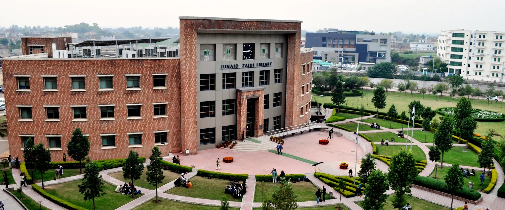
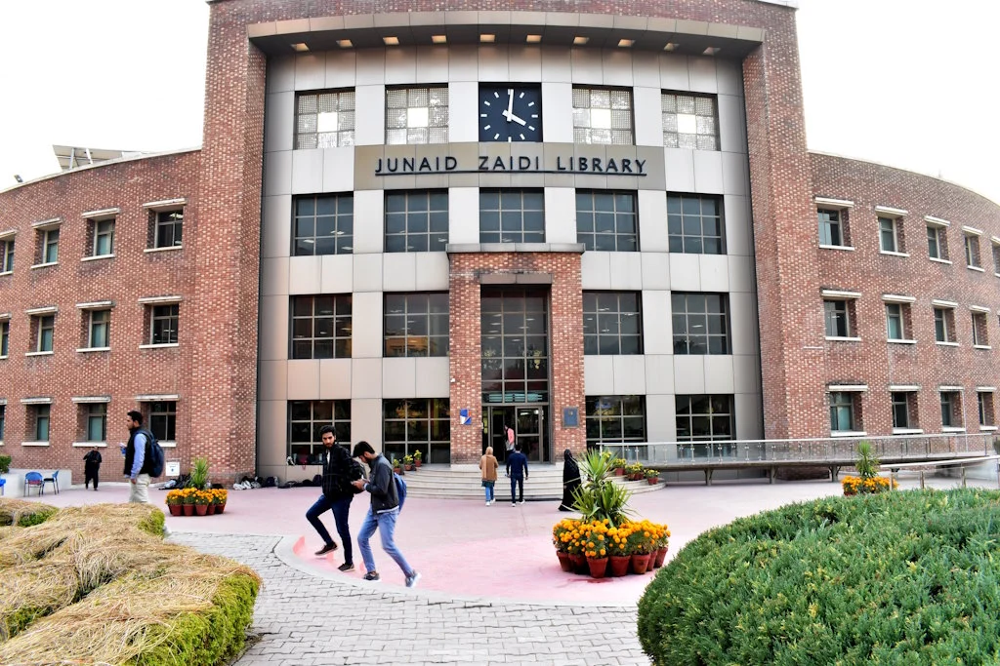
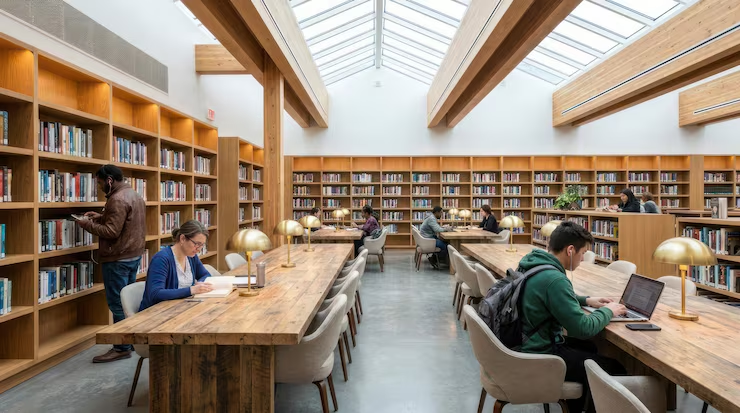

Figure 1 - The library building, viewed from above the main lawn.
About the Library
Named after Dr. S. M. Junaid Zaidi, founding Rector of COMSATS, the library houses over 100,000 print and electronic volumes. Its mission is to support research, learning and innovation across all disciplines.
The reading halls stay open until midnight during examinations, and every registered student can borrow up to five books for two weeks.
Fine for overdue books: PKR 20 10 per day per book.
The library was founded in 1998. Its Silver Jubilee was marked as
25th anniversary.
Collections and Services
- Textbooks and reference collections for every department
- HEC Digital Library with 23,000+ e-journals
- Online Public Access Catalogue (OPAC) terminals
- Digital media lab and printing services
- Register your ID card at the circulation desk
- Search OPAC or HEC e-resources
- Issue books or reserve a study room
- OPAC
- Online catalogue to search, renew and reserve books.
- Digital Library
- Remote access to IEEE, Springer, ScienceDirect and more.
Inside the Library

Figure 2 - Main entrance of the library.

Figure 3 - Silent reading hall during study hours.
Library Tour
Timings and Contact
Mon-Sat, 8:00 AM - 10:00 PM
```